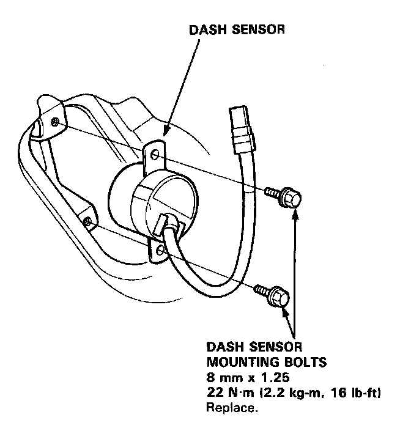

Dash Sensor Installation
Dash Sensor Installation
CAUTION:
- Be sure to install the harness wires so that they are not pinched or interfering with other car parts.
- Replace a sensor if it is dented, cracked or deformed.
- For the SRS to function properly, the right and left sensors must be installed on the proper sides.
1. Be sure the battery cables are disconnected.
2. Install the sensor securely.

3. Reinstall the sensor cover, carpet, molding, and footrest (left side), and/or the ECU, carpet, and molding (right side).
4. Remove the short connectors (RED) from the front passenger's airbag, and the short connector A from the SRS main wire harness.
5. Reconnect the front passenger's airbag connector to the SRS main harness connector, then reinstall the glove box.
8. Remove the short connector (RED) from the driver's airbag, and the short connector A from the cable reel.
7. Reconnect the driver's airbag connector to the cable reel connector. Attach the short connector (RED) to the access panel, then reinstall the panel on the steering wheel.
8. Remove the short connectors (RED) from both seat belt pretensioners, then attach the short connectors (RED) to their holders.
9. Reconnect the side wire harness connector to the driver's pretensioner, and the main wire harness connector to the front passenger's seat belt pretensioner.
10. Reconnect the battery positive cable, then the negative cable.
11. After installing the dash sensor, confirm proper system operation.
- Turn on the ignition to II: the instrument panel SRS indicator light should go on for about 6 seconds and then go off.
- Enter the customer's code number to restore radio operation.